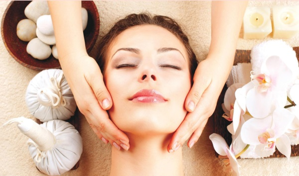

Наша кожа будет выглядеть прекрасно, если мы будем правильно питаться, вести здоровый образ жизни, больше двигаться и ко всему относиться с позитивом, однако кожа требует ещё и определённого ухода, особенно сегодня, когда мы живём в атмосфере больших городов. Разрушительные воздействия на кожу не ограничиваются выхлопными газами и хлорированной водой: есть ещё и бытовая химия, электромагнитное излучение, стрессы и много других неблагоприятных факторов.
Если не ухаживать за кожей правильно, то она будет выглядеть не очень хорошо, даже если вы стараетесь соблюдать здоровый образ жизни и не имеете вредных привычек.
Кожа всегда должна быть чистой – это даже не обсуждается, иначе о красоте и здоровье не может быть и речи. Пыль, кожное сало, отмершие чешуйки – всё это загрязняет кожу, приводит к проблемам и заболеваниям.
 Окружающая нас среда постоянно меняется, и это во многом зависит от климата. Когда температура и влажность в норме, то кожа чувствует себя хорошо, а вот горячий и сухой воздух в сочетании с палящим солнцем для кожи губителен – он вызывает раннее появление морщин. Холодный ветер и мороз делают кожу грубой, она краснеет – и это тоже путь к раннему старению. Если при этом неправильно умываться и поддаваться воздействию стрессов, то даже здоровая кожа может претерпеть негативные изменения.
Средства ухода за кожей: как правильно умываться
Возможно, мы об этом забыли, но самое важное средство для ухода за кожей – это обыкновенная вода. Именно вода, если она отвечает всем требованиям, сохраняет здоровье и красоту нашей кожи.
Когда мы умываемся, мы очищаем кожу от грязи, жира, выделений, а также микробов, попадающих на неё извне. При умывании тёплой или прохладной водой в коже улучшается кровообращение, она начинает дышать и лучше воспринимает питательные вещества.
-Умываться следует только чистой, мягкой водой, без примесей и вредных солей. Лучше всего дистиллированная вода, или природная минеральная, однако можно использовать речную воду – только её нужно вскипятить.
Мыло, лосьоны и отвары для умывания кожи
Пользоваться ли при умывании мылом? Большинство косметологов считают, что использовать мыло можно один раз в сутки, чтобы очистить кожу вечером, и только тем, у кого она жирная. Другие типы кожи могут воспаляться и пересыхать, если постоянно умываться с мылом, даже щадящим косметическим. В таких случаях можно использовать смягчающие эмульсии и очищающие лосьоны – как утром, так и вечером. Есть также специальные очищающие кремы, с жидкой консистенцией, не проникающие в поры кожи. Ещё можно использовать очищающие отвары и настои трав, и даже нерафинированное растительное масло – льняное, оливковое, миндальное, персиковое и т.д.
Никогда не следует слишком энергично тереть лицо полотенцем, так как подкожный слой легко растягивается, и от этого могут раньше времени появиться морщины.
Уход за кожей: домашние маски для лица
Уход за кожей лица обязательно предполагает использование масок для лица – домашних, основанных на народных рецептах, а также продающихся в готовом виде в косметических магазинах. Наносить маски надо на чистую кожу, чисто вымытыми руками; готовые косметические средства следует набирать специальным пластмассовым шпателем; на кожу век маску наносить не нужно.
Пока вы держите маску, необходимо находиться в покое: лучше не разговаривать и даже не читать книгу. Для снятия маски используйте ватный тампон, смоченный в тёплой воде или молоке; снимайте маску осторожно, не прикладывая усилий.